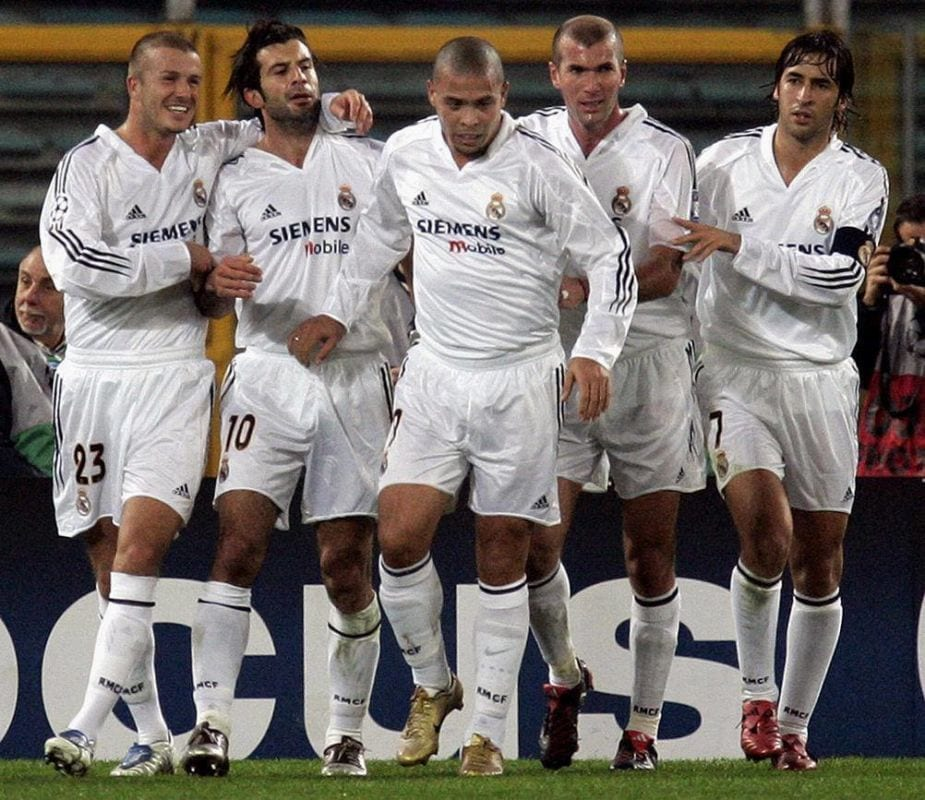

Origen de los Galácticos
Los Galácticos fue un término utilizado para referirse al Real Madrid durante la época en la que el club contrató a varios jugadores de clase mundial en un intento de formar un equipo espectacular.
En el año 2000, el presidente del Real Madrid, Florentino Pérez, lanzó el famoso proyecto Galáctico con el objetivo de fichar a los mejores jugadores del mundo.
Legado de los Galácticos
Si bien el proyecto Galáctico no logró el éxito sostenido a largo plazo, dejó un legado importante en la historia del Real Madrid y el fútbol en general.
Aunque el concepto de los Galácticos evolucionó y cambió con el tiempo, el impacto de aquellos jugadores y el estilo de juego que representaban perduran en la memoria de los aficionados al fútbol.
Más Información
Descubre más sobre los Galácticos del Real Madrid en nuestro sitio web oficial:
Visitar sitio web